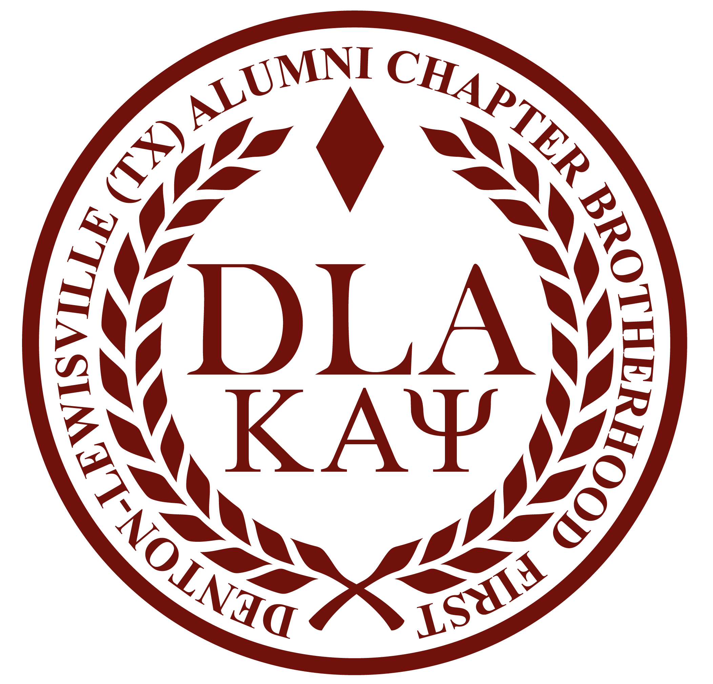
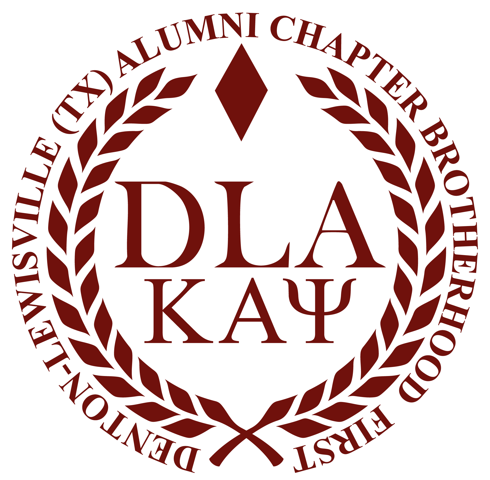
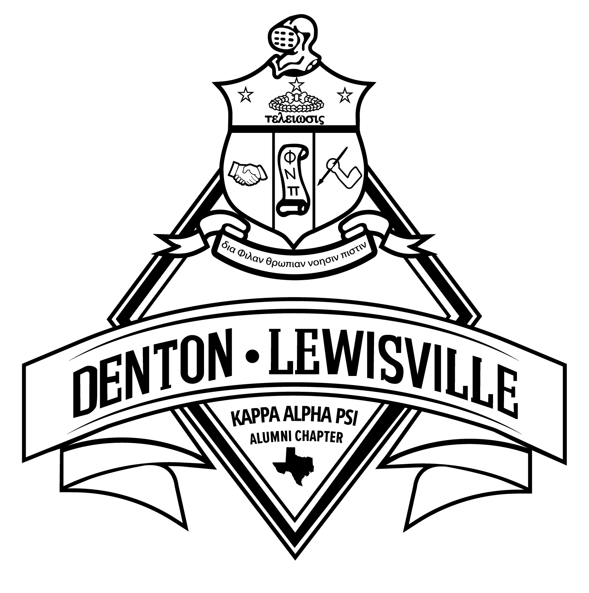
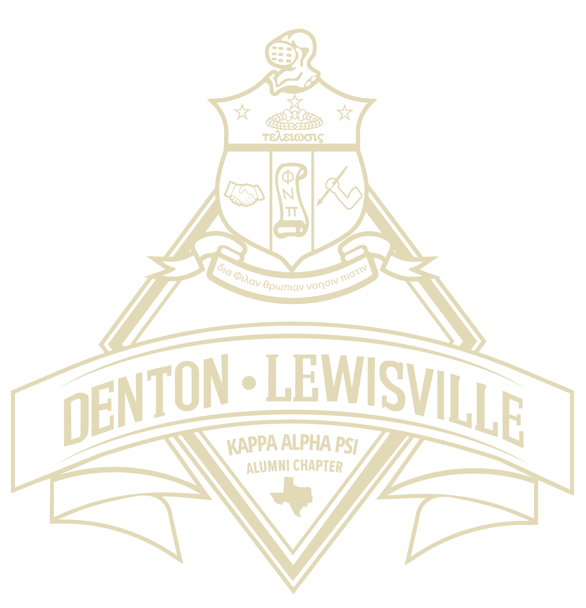
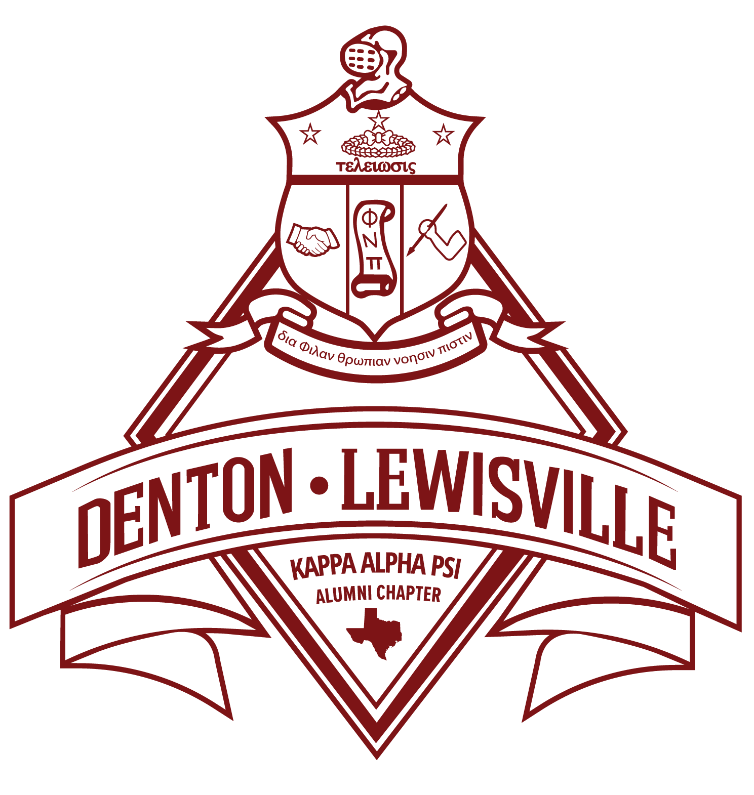
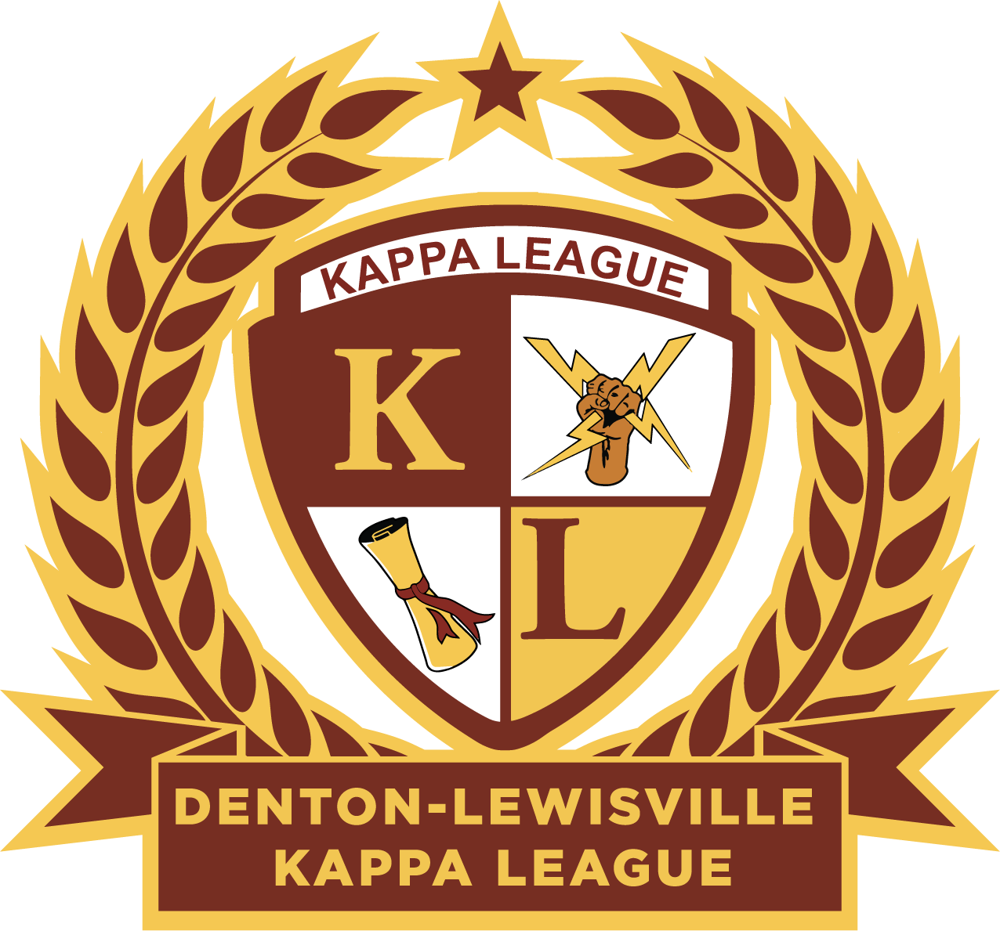

Media & Communications Guide
The Official Standards and Procedures Manual for Chapter Communications
About This Guide
This guide is the authoritative communications manual for the Denton-Lewisville (TX) Alumni Chapter. It establishes the policies, procedures, and standards that govern how the chapter communicates — internally with its Brotherhood and externally with the community, media, sponsors, and the public.
"Brotherhood First" — Every communication we produce reflects the character, values, and reputation of Kappa Alpha Psi Fraternity, Inc. We speak with one unified voice.
All Chapters
Quick Reference
Introduction
Purpose, audience, how to use this guide, and the Brotherhood First communication philosophy.
Purpose of This Guide
The Denton-Lewisville (TX) Alumni Chapter Media & Communications Guide is the chapter's authoritative reference for all matters related to brand identity, communications strategy, digital media, event promotion, photography, videography, graphic design, and media relations.
This guide is not simply a style manual. It is an operational framework that ensures every officer, committee member, media volunteer, photographer, webmaster, designer, and vendor represents the chapter and Kappa Alpha Psi Fraternity, Inc., with precision, consistency, and excellence — every time.
Audience
- Chapter officers and elected leadership
- Media Committee members and chairpersons
- Photographers, videographers, and graphic designers
- Webmasters and digital platform administrators
- Event coordinators and promotions volunteers
- Vendors, contractors, and external partners
- Incoming officers and future chapter leadership
Communication Philosophy: Brotherhood First
Our chapter motto — "Brotherhood First" — is not merely a tagline. It is the philosophical foundation of everything we communicate. Brotherhood-first communication means:
- We speak with one unified voice.
- We protect the dignity of every Brother.
- We elevate the chapter's mission in every message.
- We engage the community with integrity, professionalism, and purpose.
- We hold ourselves to a higher standard because the world is watching.
Guiding Principles
| Principle | Definition |
|---|---|
| Unity | All communication reinforces the Brotherhood's collective mission and values. |
| Clarity | Information is presented clearly, concisely, and accessibly. |
| Respect | Every message upholds respect for the Fraternity, its members, and the public. |
| Excellence | Every communication is produced with care, precision, and professionalism. |
| Accountability | Every communicator is responsible for what they publish, post, or present. |
| Consistency | Brand standards are applied uniformly across all channels and formats. |
About the Chapter
History, mission, vision, Five Objectives, core values, and strategic communication goals.
1.1 History
Kappa Alpha Psi Fraternity, Inc., was founded on January 5, 1911, at Indiana University in Bloomington, Indiana. Established with the motto "Achievement in Every Field of Human Endeavor," the Fraternity has grown into one of the most respected collegiate Greek-letter organizations in the United States.
The Denton-Lewisville (TX) Alumni Chapter was chartered in 1997, extending the Fraternity's enduring legacy into the North Texas region. Since its chartering, the chapter has grown into a cornerstone of community engagement, mentorship, and leadership development.
1.2 Mission
To advance the Five Objectives of Kappa Alpha Psi Fraternity, Inc., through purposeful programming, meaningful service, and sustained community engagement — guided always by the principles of brotherhood, integrity, and achievement.
1.3 Vision
To be recognized as the leading fraternal organization in North Texas for academic excellence, civic impact, mentorship, and professional development — setting the standard by which other chapters are measured.
1.4 The Five Objectives
- To unite college men of culture, patriotism, and honor in a bond of fraternity.
- To encourage honorable achievement in every field of human endeavor.
- To promote the spiritual, social, intellectual, and moral welfare of its members.
- To aid the aims and purposes of colleges and universities.
- To inspire service in the public interest.
1.5 Core Values
| Value | Description |
|---|---|
| Scholarship | Academic excellence and intellectual growth form the foundation of our brotherhood and service. |
| Fellowship | Brotherhood is sacred. We build lasting bonds through shared purpose, mutual respect, and unwavering support. |
| Character | Integrity, discipline, and ethical leadership define who we are and how we serve our communities. |
| Achievement | We pursue excellence in every endeavor — personal, professional, and communal. |
| Service | We are committed to inspiring service in the public interest and giving back to our communities. |
1.6 Mottos
"Brotherhood First" — The lens through which every communication decision is made.
"Achievement in Every Field of Human Endeavor" — The founding motto adopted in 1911.
"Training for Leadership" — The chapter's public motto; may appear on official chapter media and materials.
1.7 Strategic Communication Goals
- Amplify chapter achievements, programs, and impact across all communication channels.
- Strengthen fraternal bonds through transparent and regular internal communication.
- Engage and inform the North Texas community through professional, values-driven messaging.
- Project a unified, consistent, and dignified brand identity at all times.
- Build and maintain meaningful relationships with media, sponsors, community partners, and the public.
- Preserve the chapter's history and legacy through accurate documentation and digital archiving.
Communications Governance
Media Committee structure, roles, Approval Matrix, and escalation procedures.
2.1 Media & Communications Committee
The Media & Communications Committee ("Media Committee") is the primary body responsible for planning, producing, approving, and publishing all chapter communications. It operates under the authority of the Chapter Polemarch and Board of Directors.
2.2 Roles & Responsibilities
- Develops and executes the chapter's overall communications and marketing strategy.
- Serves as the primary vendor correspondent — managing relationships with licensed vendors, print shops, designers, and external media partners.
- Reviews and approves all promotional materials before publication or distribution.
- Ensures all chapter and Kappa Alpha Psi brand standards are correctly applied across all media.
- Coordinates with all committees to ensure communications support their programs and events.
- Develops relationships with local businesses, sponsors, and community organizations on behalf of the chapter.
- Oversees the chapter's advertising budget and procurement of media services.
- Produces newsletters, press releases, website articles, and event recaps.
- Documents chapter activities and submits reports to the Keeper of Records.
- Maintains the chapter's narrative voice across written communications.
- Maintains a comprehensive archive of chapter history, photographs, documents, and milestones.
- Curates the chapter's institutional memory and ensures historical accuracy in all communications.
- Provides professional-quality photo coverage at all chapter events and programs.
- Delivers edited, properly named image files to chapter cloud storage within 72 hours of each event.
- Plans, records, and edits video content for events, promotional campaigns, and social media.
- Delivers finalized video files to the chapter media library within 7 days of each event.
- Manages and maintains the chapter's official website at www.dlakappa.org.
- Publishes approved content within 48 hours of approval.
- Conducts monthly website audits.
ALL official email correspondence must be submitted to the Keeper of Records. No communication is considered official unless received and filed by the KOR.
2.3 Communication Approval Matrix
| Communication Type | Prepared By | Reviewed By | Final Approval |
|---|---|---|---|
| Social Media Post (Routine) | Media Committee | MAC | MAC |
| Social Media Post (Sensitive/Crisis) | Media Committee / Polemarch | MAC + Vice Polemarch | Polemarch |
| Press Release | Reporter | MAC + Vice Polemarch | Polemarch |
| Event Flyer / Graphic | Designer / Media Committee | MAC | MAC |
| Newsletter | Reporter | MAC | Polemarch |
| Website Content | Reporter / Webmaster | MAC | MAC |
| Email to Members | Originating Officer / Committee | KOR | KOR |
| Email to Public / Media | Reporter / MAC | MAC | Polemarch |
| Official Statement / Crisis | Polemarch / MAC | Board of Directors | Polemarch |
| Vendor / Sponsor Communication | MAC (Bro. Colen Skinner) | Vice Polemarch | Polemarch |
2.4 Escalation Procedures
Visual Identity
Official colors, typography, logos, safe areas, prohibited usage, and brand consistency standards.
4.1 Official Colors
All color specifications must use numeric values — never describe colors in plain English. Precise codes are the only acceptable standard when communicating with vendors, designers, and printers.
Primary Palette — Crimson & Cream
Alternate Palette 1 — Red & White (Print / Textile)
Alternate Palette 2 — Digital (Screen-Optimized)
4.2 Typography
| Typeface | Role | Use |
|---|---|---|
| Trajan Pro / Cinzel | Primary display/heading | All headings, titles, formal documents, website headers |
| Cloister Black | Formal ceremonial headings | Certificates, awards, official recognitions only |
| Garamond | Subheadings, pull quotes | Secondary headings in print documents |
| Source Sans Pro | Primary body copy | All body text in Fraternity materials |
| Open Sans | Secondary body | Digital and print body copy |
| Roboto | UI elements, captions | Mobile-first, digital interface elements |
4.3 Official Logos
The chapter maintains three logo families. Each has approved color variations for different applications. Always use the highest-resolution file available. Never recreate logos from scratch.
DLA Seal — Primary Mark
The circular seal is the chapter's primary identifier. Use on all official chapter communications, letterhead, and digital properties.
Seal — Crimson on Cream
Primary use — all standard communications

Seal — Elegant (V1)
Formal publications, event programs, print

Seal — Elegant (V2)
Digital headers, presentations, merch
DLA Crest — Secondary Mark
The shield/crest mark is the secondary chapter identifier. Use in co-branded materials, apparel, and contexts where the circular seal is too detailed at small sizes.

Crest — Black
One-color print, fax, photocopy

Crest — Cream
Reversed — crimson backgrounds only

Crest — Crimson
Default — cream or white backgrounds
Crest — White
Dark backgrounds, merchandise
Program Marks
Program-specific marks are used exclusively for their designated programs. They may not be substituted for the chapter's primary marks.

Denton-Lewisville Kappa League
Kappa League youth program materials only
Guide Right Program Mark
dlaguideright.org, Guide Right collateral only
Kappa League Marks — KL Monogram Variants
The KL monogram is the primary sub-brand mark for Kappa League programming. Use the appropriate variant based on background color and context.

KL — Crimson Fill
Light / white backgrounds

KL — Outline (Crimson/Gold)
Light backgrounds, secondary use

KL — Gold Outline
Dark / crimson backgrounds
Kappa League Golf Marks
The Golf shield mark is used exclusively for Kappa League Golf tournament and related programming.

KL Golf — Crimson Text
White / light backgrounds

KL Golf — Gold Text
White / light backgrounds, alternate

KL Golf — Dark Background
Crimson / dark event materials
The Kappa Diamond (the Fraternity badge) and its facsimile are restricted to use as a badge only. It may not appear on programs, apparel, jewelry, announcements, or invitations. (Statute 35, Section 7)
Prohibited Logo Usage
The six prohibited uses below apply to all chapter and Fraternity marks. When in doubt, don't — always use the official logo files provided by the Chapter or IHQ. For approvals or questions: dlakapsi@gmail.com
1. Altering colors, proportions, or design | 2. Stretching or distorting | 3. Low-legibility backgrounds | 4. Program marks as primary seal | 5. Playboy Bunny facsimile — strictly prohibited | 6. Commercial reproduction without IHQ vendor license
4.4 Logo Color Variations Summary
| Mark | Variation | Background | Use |
|---|---|---|---|
| Seal (All) | Crimson | Cream #F2EBD7 or White | Default — most communications |
| Crest | Crimson | Cream #F2EBD7 or White | Default secondary mark |
| Crest | Cream | Crimson #70110C | Dark / reversed backgrounds |
| Crest | Black | White #FFFFFF | One-color print, fax, photocopy |
| Crest | White | Black or dark solid | Dark one-color applications, merch |
| Kappa League | Full color | White or Cream | Kappa League program only |
| Guide Right | Gold/black | White or Cream | Guide Right / dlaguideright.org only |
4.5 Official Letterheads
The chapter maintains two official letterhead formats. Use only the approved digital files — never recreate letterheads manually. Both are available in the chapter's cloud storage under /Brand Assets/Letterheads/.
Letterhead 1 — Official Chapter (Centered)
Use for: General chapter correspondence, announcements, official statements
Letterhead 2 — Polemarch Stationery (Inline)
Use for: Official communications from the Office of the Polemarch only
Letterhead Usage Rules
| Rule | Required |
|---|---|
| Use only official digital files — never retype or recreate the header | Always |
| Letterhead 2 (Polemarch) is reserved exclusively for the Polemarch's use | Always |
| Do not crop, resize, recolor, or alter any element of the letterhead | Always |
| Body text begins no less than 0.5 inches below the letterhead rule line | Always |
| Font for body: Garamond or Source Sans Pro, minimum 11pt, color: Black | Always |
| Margins: 1 inch on all sides | Always |
| Do not place letterhead on colored or patterned backgrounds | Never |
| Do not combine letterheads or mix elements from both formats | Never |
What NOT To Do — Incorrect Letterhead Usage
Do Not — Stretch or distort
Never force the letterhead into a fixed height or stretch it horizontally. Always maintain original proportions.
Do Not — Place on colored background
Letterheads are designed for white or cream paper only. Never use on colored, dark, or patterned backgrounds.
Do Not — Use Polemarch letterhead for non-Polemarch comms
Letterhead 2 is restricted to the Office of the Polemarch. MAC, KOR, and other officers use Letterhead 1 only.
Do Not — Recreate or retype the header
Denton Lewisville TX Alumni Chapter
Kappa Alpha Psi Fraternity Inc
Never manually type or recreate the header. Always use the official file from cloud storage — unauthorized versions are not permitted.
4.6 IHQ Registered Trademarks
The following marks are federally registered trademarks of Kappa Alpha Psi Fraternity, Inc. No chapter member, affiliate, or vendor may reproduce, alter, or commercially use these marks without a current IHQ Vendor License. Prosecution of violators is actively enforced by IHQ.
Use of any registered trademark without authorization constitutes infringement. IHQ will act to prosecute violations. A current vendor license is required for any commercial reproduction of these marks. Contact IHQ at IHQIP@KappaAlphaPsi1911.com for licensing inquiries.
Registered Trademark Reference — Word Marks
Registered Trademark Reference — Device Marks
The following are specifically prohibited without a vendor license: reproducing the Coat of Arms, using "NUPE" on merchandise, printing "KAΨ" or the Psi symbol on apparel or products, and using "1911" in any commercial context associated with the Fraternity. The Diamond K mark requires written IHQ approval for any use.
Brand Communications
Voice, tone, professional language, writing standards, and accessibility.
3.1 Voice
The chapter's communications voice is authoritative yet approachable. Confident, not arrogant. Warm, not casual. Informative, not academic. Inspiring, not preachy.
3.2 Tone by Context
| Context | Appropriate Tone | Example |
|---|---|---|
| Event Announcements | Enthusiastic, welcoming | "Join us as we celebrate another year of achievement and brotherhood." |
| Member Communications | Professional, collegial | "Brothers, please review the attached agenda for our upcoming meeting." |
| Community Outreach | Warm, community-focused | "We are proud to partner with the City of Denton to serve our neighbors." |
| Press Releases | Formal, newsworthy | "The Denton-Lewisville Alumni Chapter today announced..." |
| Social Media | Engaging, accessible | "Big things happening in North Texas! See you Saturday." |
| Crisis Communications | Calm, factual, measured | "We are aware of the situation and are addressing it." |
3.3 Writing Standards
- Write in active voice.
- Use the Oxford comma in all lists.
- Proofread every communication before publication.
- Avoid slang, colloquialisms, and profanity in all official communications.
- No emojis in press releases, newsletters, or formal emails.
- Capitalize "Fraternity," "Brotherhood," "Chapter," and "Brothers" as proper nouns.
Before publishing any communication, ask: "Would I be proud if the Grand Polemarch read this?" If the answer is no — revise it.
Website Standards
Structure, accessibility, SEO, security, backups, and certification requirements for dlakappa.org.
5.1 Official Domains
| Domain | Purpose |
|---|---|
| www.dlakappa.org | Primary chapter website |
| www.dlaguideright.org | Guide Right / Kappa League program website |
5.2 Required Content
- Chapter Overview — History, mission, vision, and leadership
- Programs & Initiatives — Guide Right, Kappa League, community service
- Events — Upcoming events and past recaps
- Contact — Email, mailing address, social media links
- Membership information
- Anti-hazing statement (required by IHQ)
5.3 Security Requirements
- SSL certificate active at all times (https:// required)
- All software and plugins updated within 30 days of release
- Weekly automated backups stored off-site
- Password transfer required immediately at officer transition
5.4 Website Audit Checklist
- SSL certificate valid and active
- All pages load without errors
- All links are functional
- Anti-hazing statement present
- All images have alt text
- All videos have closed captions
- Contact information is current
- No autoplaying audio or video
- Recent backup confirmed
- SEO audit completed
- WCAG 2.1 AA accessibility audit passed
Social Media
Approved platforms, posting frequency, content calendar, hashtags, moderation, and crisis response.
6.1 Approved Platforms
| Platform | Primary Use | Frequency |
|---|---|---|
| Events, announcements, community outreach | 3–5 posts/week | |
| Visual storytelling, reels, stories | 4–6 posts/week + daily stories | |
| X (Twitter) | Real-time updates, commentary | Daily |
| Professional achievements, impact | 1–2 posts/week | |
| ️ YouTube | Event recaps, interviews, livestreams | Monthly minimum |
| Chapter App Comms | Internal Brotherhood coordination only | As needed — official business only |
6.2 Official Hashtags
Chapter App Comms effectively functions as a public space — messages can be screenshot and distributed externally. All Brothers should communicate in Chapter App Comms as if the message may become public. Brothers not financially active at all three levels will be removed.
Email Communications
Official email accounts, content standards, templates, distribution lists, and best practices.
7.1 Official Email Standard
All chapter business must be conducted through official @dlakappa.org email addresses. Personal email accounts must never be used for chapter communications.
ALL official correspondence must be submitted to the Keeper of Records. No communication is official until received and filed by the KOR.
7.2 Email Types
| Type | From | Approval |
|---|---|---|
| Meeting Notice | KOR | KOR |
| Event Announcement | MAC / Media Committee | MAC |
| Newsletter | Reporter / MAC | Polemarch |
| Press Release (Email) | MAC / Reporter | Polemarch |
| Emergency Communication | Polemarch | Polemarch |
7.3 Best Practices
- Proofread every email before sending
- Respond to chapter emails within 24–48 business hours
- Test all hyperlinks and attachments before sending
- Use BCC for large group emails to protect privacy
- Always include the standardized email signature
- Submit all correspondence to the KOR
Mobile Communications
The DLA Chapter App, communication priority order, official uses, event communication timeline, push notification standards, approval workflow, and emergency protocols.
8.1 The DLA Chapter App — Denton Lewisville Kappas
The official chapter mobile app is Denton Lewisville Kappas, powered by Flipside Apps. It serves as the chapter's primary digital hub for member resources, announcements, events, and internal communications.
Chapter App
App Name: Denton Lewisville Kappas
Platform: Flipside Apps (Progressive Web App)
URL: dlakappas.flipsideapps.com
Access: Members only — login required
Administrator: Webmaster (Bro. MD Taylor) in coordination with MAC
8.1.1 Purpose & Scope
The chapter app centralizes member-facing resources and communications in a single, branded environment. It is the authoritative source for chapter announcements and replaces ad-hoc messaging threads for official business.
| Function | Description |
|---|---|
| Announcements | Official chapter news, decisions, and updates pushed to all members |
| Event Calendar | Chapter events, deadlines, and meeting schedules |
| Member Directory | Contact information for active chapter members |
| Document Library | Key chapter documents, forms, and resources |
| Push Notifications | Time-sensitive alerts for meetings, events, and urgent business |
| Chapter App Comms | Internal brotherhood messaging (see Section 8.3) |
8.1.2 Access & Onboarding
- All active members in good financial standing must be registered in the app.
- New members are added by the Webmaster within 7 days of joining the chapter.
- Members who become financially inactive are removed from the app after 30 days' notice.
- The app is accessed via browser at dlakappas.flipsideapps.com or by installing it as a PWA (add to home screen).
On iPhone: Open Safari → navigate to dlakappas.flipsideapps.com → tap the Share button → select Add to Home Screen. On Android: Open Chrome → navigate to the URL → tap the menu → select Add to Home Screen.
8.1.3 Content Governance
| Content Type | Who Can Post | Approval Required |
|---|---|---|
| Official Announcements | Polemarch, MAC | Polemarch |
| Event Listings | MAC, KOR | MAC |
| Document Uploads | KOR, Asst. KOR | KOR |
| Push Notifications | Webmaster, MAC | Polemarch or VP |
| Directory Updates | Webmaster | Webmaster |
8.1.4 Member Usage Guide
The DLA Chapter App is your primary hub for chapter information, events, documents, and brother-to-brother communication. This section walks you through each feature of the app.
Navigate to dlakappas.flipsideapps.com in your browser. Sign in with your chapter-issued credentials. For the best experience, install the app to your home screen using the instructions in Section 8.1.2.
Announcements
Announcements are the official voice of the chapter. Only MAC-approved content appears here.
- Reading: Tap the Announcements section from the app home screen. Scroll to view the full post. Tap any announcement to read its full text and attachments.
- Sharing: Use the in-app share icon to forward an announcement to external contacts. Do not screenshot and redistribute — share only via the official share function so context is preserved.
- Notifications: You will receive a push notification each time a new announcement is posted. Do not disable these — announcements include time-sensitive chapter business.
Events
The Events section is the authoritative chapter calendar. All chapter events, community service opportunities, and social functions are listed here.
- Viewing Events: Tap Events to browse the calendar. Switch between list view and calendar view using the toggle at the top.
- RSVPing: Tap an event and select RSVP. Provide a headcount if prompted. RSVP deadlines are set per event — observe them so MAC can plan accordingly.
- Adding to Personal Calendar: After tapping an event, select Add to Calendar to sync it to your phone's native calendar app (iPhone Calendar or Google Calendar).
- Event Details: Each listing includes date, time, location, attire requirements, and any pre-event obligations. Read the full detail before contacting an officer with questions that are already answered there.
Member Directory
The Directory contains contact information for all active chapter members.
- Searching: Use the search bar at the top of the Directory section. You can search by name, role, or line name.
- Contacting a Brother: Tap a brother's card to view his profile. Tap the phone or email icon to initiate contact directly from the app.
- Keeping Your Profile Current: Your profile information is maintained by the Webmaster (Bro. MD Taylor). If your phone number, email, or other information changes, notify the Webmaster immediately.
Document Library
All official chapter documents — bylaws, forms, minutes, financial reports, and reference materials — are stored here.
- Finding Documents: Navigate to the Documents section. Documents are organized by category (Governance, Financial, Forms, Archive). Use the search bar to find documents by name.
- Downloading: Tap a document and select Download or Open. PDFs open natively in your browser or phone's PDF viewer.
- Submitting Forms: Some forms (e.g., reimbursement requests, committee sign-ups) may be submitted directly through the app. Follow the on-screen instructions for each form.
- Requesting a Document: If you cannot find a document you believe should be in the library, contact KOR Bro. Julian Dozier or Asst. KOR Bro. Omari Souza.
Chapter App Comms (In-App Messaging)
Chapter App Comms is the in-app group messaging channel for internal brotherhood coordination. See Section 8.3 for the full messaging policy. Key usage points:
- Posting: Tap the Comms or Chat section. Type your message and tap Send. Keep messages professional and relevant to chapter business.
- Replying: Tap and hold a message (or use the reply icon) to reply in-thread. Use threaded replies for topic-specific discussions to keep the main feed clean.
- Tagging a Brother: Type
@followed by a brother's name to tag him directly. Only tag brothers when their specific attention is required — avoid mass-tagging. - Media: You may attach images to messages for chapter-business purposes (event photos, documents, proofs). Do not share personal or unofficial content in Chapter App Comms.
Push Notifications
- Enable push notifications when prompted during app installation. Without them, you will miss time-sensitive chapter communications.
- Notifications are sent for: new announcements, new events, urgent chapter alerts, and direct tags in Chapter App Comms.
- If you stop receiving notifications, verify your device notification settings for the app and your browser/PWA permissions.
8.1.5 Member Do's & Don'ts
| ✅ Do | 🚫 Don't |
|---|---|
| Keep your profile information current | Share your login credentials with anyone |
| RSVP to events by the stated deadline | Screenshot and redistribute announcements or Comms messages externally |
| Use Chapter App Comms for chapter business only | Use Chapter App Comms for personal conversations or off-topic content |
| Tag brothers only when their attention is specifically needed | Mass-tag (@everyone) without officer authorization |
| Report technical issues to Bro. MD Taylor (Webmaster) | Attempt to access, edit, or delete another brother's content |
| Download official documents from the Document Library | Distribute documents outside the chapter without KOR approval |
| Keep push notifications enabled | Post unofficial chapter communications on the app without MAC approval |
8.1.6 Frequently Asked Questions
First, verify you are navigating to dlakappas.flipsideapps.com (not a search engine result). If your credentials are not working, contact Webmaster Bro. MD Taylor to reset your access. Do not attempt to create a new account — accounts are provisioned centrally.
iPhone: Go to Settings → Notifications → your browser (Safari) or the app, and ensure "Allow Notifications" is on. Android: Go to Settings → Apps → Chrome (or your browser) → Notifications and enable them. If notifications were previously blocked, you may need to re-grant permission from your browser settings. Contact Bro. MD Taylor if the issue persists.
Open the app → tap Directory → search by name. Tap the brother's card to view his contact details and tap the phone or email icon to contact him directly. If a brother's information is missing or incorrect, notify Bro. MD Taylor.
Open the Events section → tap the event → tap Add to Calendar. This exports the event to your phone's native calendar (iCal or Google Calendar). If the option doesn't appear, ensure your browser has calendar access permissions.
Contact KOR Bro. Julian Dozier or Asst. KOR Bro. Omari Souza to request the document be added. If the document is time-sensitive, reach out via Chapter App Comms and tag the KOR directly.
PWA apps are cached for offline use. Force a refresh: iPhone (Safari): Close and reopen the app, or clear the Safari website data for dlakappas.flipsideapps.com. Android (Chrome): Open Chrome → tap the three-dot menu → Settings → Privacy → Clear Browsing Data (check Cached Images and Files). If the issue persists, contact Bro. MD Taylor.
- Technical issues (login, notifications, app errors): Webmaster — Bro. MD Taylor
- Content questions (announcements, events, documents): MAC or KOR Bro. Julian Dozier
- Messaging policy questions: VP Bro. Kirk Nobles or Polemarch Bro. Duncan E. Brown
8.2 Communication Priority Order
Unless otherwise directed by the Polemarch, official chapter communications shall follow this priority order. Members are expected to regularly monitor the DLA Mobile App for official chapter information.
| # | Platform | Purpose |
|---|---|---|
| 1 | DLA Mobile App | Official Chapter Communications — primary platform |
| 2 | Official Notices & Supporting Documents | |
| 3 | Text Message | Emergency Notifications Only |
| 4 | Chapter Website | Public Information |
| 5 | Social Media | Public Promotion & Recruitment |
Failure to monitor the DLA Mobile App or enable notifications does not exempt members from published deadlines or chapter requirements.
8.3 Chapter App Comms — Internal Messaging
Chapter App Comms is the in-app messaging feature used for internal Brotherhood coordination. It supplements, but does not replace, official email communications.
Chapter App Comms effectively functions as a public space — messages can be screenshot and distributed externally. All Brothers must communicate in Chapter App Comms as if the message may become public. Brothers not financially active at all three levels will be removed.
- Chapter App Comms is for chapter business only — not personal conversations or social exchanges.
- No sensitive financial, disciplinary, or personnel matters are to be discussed in the app.
- Profanity, disrespect toward brothers, and any content that violates the Fraternity's Code of Conduct is prohibited.
- The Webmaster or Polemarch may remove members from channels for violations.
8.4 Notification Standards
- All push notifications must be approved by the Polemarch or Vice Polemarch before sending.
- Messages must include: who, what, when, and where.
- Do not send push notifications between 10:00 PM and 7:00 AM except in genuine emergencies.
- Proofread all messages before sending — notifications cannot be recalled.
- Limit push notifications to no more than 3 per week absent an emergency.
Checklist — App Content Review
- Event listings reviewed and approved before publishing
- All documents in the library are current (no outdated versions)
- Member directory reviewed at the start of each fiscal year
- Inactive members removed within 30 days of losing good standing
- App credentials secured and accessible only to Webmaster and Polemarch
- App URL (dlakappas.flipsideapps.com) current and accessible
8.5 Official Uses of the Mobile App
The app shall serve as the official source for the following content types:
| Category | Content |
|---|---|
| Announcements | Chapter announcements, decisions, and official updates |
| Events | Event information, registration links, and RSVP management |
| Notifications | Push notifications for time-sensitive information |
| Committees | Committee pages and information |
| Training | Training materials and certification resources |
| Calendar | Chapter calendar, meeting agendas and documents |
| Financial | Financial information (when authorized) |
| Forms & Surveys | Chapter forms, surveys, and approved voting |
| Member Resources | Kappa League, Guide Right, scholarship information |
| Archive | Archived communications for institutional continuity |
8.6 Event Communication Timeline
Each event published to the Mobile App shall follow this communication timeline. The Event Insurance Checklist (see Chapter 13) must be approved before any event is advertised.
8.7 Required App Content Per Event
Each chapter event published to the app must include all of the following fields. Incomplete event listings will not be approved for publication.
| Required Field | Notes |
|---|---|
| Event Title | Official name as approved by MAC |
| Description | Full event description, purpose, and target audience |
| Date & Time | Start and end time |
| Location | Full address and parking information |
| Registration Link | Active link or "No registration required" |
| Contact Person | Name and email of event chair |
| Sponsoring Committee | Committee responsible for the event |
| Dress Code | Attire requirements |
| Event Flyer | MAC-approved flyer image |
| Event Insurance Approval | Checklist completed (internal — not displayed publicly) |
| Applicable Forms | Any required forms attached or linked |
8.8 Mobile App Content Standards
All content published within the app shall follow chapter Branding Standards (see Chapter 4). Content shall be:
| Standard | Requirement |
|---|---|
| Accurate | Verified by the submitting committee before submission |
| Professional | Free of profanity, slang, or inappropriate content |
| Timely | Published on schedule per Section 8.6 event timeline |
| Accessible | Alt text on images; readable font sizes; plain language |
| Family Friendly | No alcohol imagery, sexually explicit content, or offensive material |
| Properly Branded | Approved logos, colors, and typography only |
| ADA Conscious | Accessible to members with disabilities where practical |
The following shall never appear in official app content: alcohol consumption imagery, sexually explicit material, nudity, profanity, hate speech, political endorsements, gambling promotion, offensive memes, copyrighted material without license, defamatory statements, or misleading information.
8.9 App Publication Approval Workflow
8.10 Administrator Responsibilities
Only authorized administrators designated by the Media & Communications Committee may perform the following functions. Administrative access shall be limited and reviewed annually.
- Publish announcements and push notifications
- Update event calendar listings
- Upload and archive documents
- Publish event pages
- Manage member groups and access levels
- Edit navigation and app structure
- Archive content at the end of each fiscal year
No committee, officer, or chapter entity shall independently publish official chapter announcements, event promotions, or mass member communications without MAC review and approval. Administrative credentials shall be secured and accessible only to the Webmaster and Polemarch.
8.11 Emergency Communications via the App
The Mobile App shall serve as the primary emergency communication platform. Emergency messages may also be distributed by email and text message when appropriate.
Examples of emergency communications:
- Meeting cancellations or venue changes
- Inclement weather or safety notices
- Emergency chapter announcements
- Schedule changes affecting members
- Province updates affecting chapter operations
8.12 Communication Governance
To ensure consistent messaging and preserve institutional continuity across administrations:
- All chapter communications shall originate through the Media & Communications Committee.
- No committee, commission, officer, or chapter entity shall independently publish official announcements without MAC review and approval.
- The MAC Committee serves as the chapter's communications clearinghouse — ensuring message accuracy, branding consistency, legal compliance, archival preservation, and coordinated timing.
- Communication requests shall follow the established submission timelines and approval workflow.
- The Mobile App shall remain the chapter's official repository for member communications, supporting long-term continuity between administrations.
Photography
Event coverage, portrait standards, editing, consent forms, naming conventions, and storage.
9.1 Required Shot List
| Shot Type | Description | Qty |
|---|---|---|
| Venue / Establishing | Wide-angle exterior and interior before guests arrive | 3–5 |
| Leadership Portraits | Individual, in-focus, well-lit portraits of officers | 1+ per officer |
| Full Chapter Group Photo | Official group of all attending Brothers | 3–5 variations |
| Program Action | Candid and posed shots of the event program | 20–50+ |
| Award / Recognition | Handshake shots for each recipient | 3–5 per recipient |
9.2 File Naming Convention
YYYY-MM-DD_EventName_###.jpg
Example: 2025-03-15_AchievementGala_001.jpg
9.3 Consent Requirements
| Situation | Consent Required |
|---|---|
| General public event | Verbal consent acceptable |
| Identifiable portrait in publications | Written Photo Release Form |
| Minor participants (under 18) | Written parental/guardian consent required |
| Images used in advertising | Written Photo Release Form |
9.4 Photography Checklist
- Assignment confirmed with Media Committee
- All equipment tested and backup batteries charged
- Consent forms obtained where required
- Shot list reviewed and confirmed
- All photos backed up from memory card post-event
- Editing completed within 72 hours
- Files named per naming convention
- Final images uploaded to chapter cloud storage
Videography
Planning, production, audio, livestreams, editing, captions, music licensing, and publishing.
10.1 Platform Specs
| Platform | Format | Max Resolution |
|---|---|---|
| YouTube | MP4, H.264 | 4K (preferred) / 1080p minimum |
| MP4, H.264 | 1080p | |
| Instagram Reels | MP4, vertical 9:16 | Up to 90 seconds |
| Instagram Stories | MP4, vertical 9:16 | Up to 60 seconds/clip |
| YouTube Shorts | MP4, vertical 9:16 | Up to 60 seconds |
10.2 Music Licensing
Using copyrighted music without a license may result in content takedowns and legal liability. Always use properly licensed music.
- YouTube Audio Library (free for YouTube content)
- Epidemic Sound (subscription)
- Artlist (subscription; covers social media)
- Kappa Klassics — kappaklassiks.bandcamp.com
Graphic Design
Flyer standards, required and prohibited elements, online event posting standards, social media image sizes, and design approval workflow.
11.1 Social Media Image Sizes
| Platform | Post Size | Story / Reel | Cover Photo |
|---|---|---|---|
| 1200×630px | 1080×1920px | 820×312px | |
| 1080×1080px | 1080×1920px | 320×320px (profile) | |
| Twitter / X | 1200×675px | N/A | 1500×500px |
| 1200×627px | N/A | 1584×396px | |
| YouTube | 1280×720px (thumbnail) | N/A | 2560×1440px |
11.2 Design Approval Workflow
11.3 Flyer Standards
Every official chapter flyer shall be created using MAC-approved templates and must pass brand compliance review before publication. Flyers are official chapter communications and reflect the chapter's image and brand standards.
11.3.1 Required Elements
Every flyer shall include all of the following:
| Required Element | Standard |
|---|---|
| Official Chapter Logo | Approved mark only — no distortion or modification |
| Approved Colors | Crimson (#70110C) and Cream (#F2EBD7) — no unauthorized colors |
| Event Title | Official event name as approved by MAC |
| Date | Day of week, full date |
| Time | Start time and end time |
| Location | Venue name and full address |
| Registration Information | Link, QR code, or "No registration required" |
| Contact Information | Official chapter email or event chair contact |
| Sponsoring Committee | Name of the committee presenting the event |
| Required Disclaimers | Any IHQ-required language or chapter disclaimers |
11.3.2 Prohibited Content
The following shall never appear on any official chapter flyer or promotional material:
| Prohibited Item | Why |
|---|---|
| Alcohol imagery or references | Chapter policy and IHQ compliance |
| Sexually explicit or suggestive imagery | Chapter policy — family-friendly standard required |
| Nudity | Chapter policy and IHQ compliance |
| Pixelated or low-resolution images | Minimum 300 DPI for print; 72 DPI for digital |
| Distorted logos | Violates IHQ trademark requirements — see Chapter 4 |
| Unlicensed or copyrighted graphics | Legal liability — see Chapter 18 |
| Clipart without license | Legal liability |
| Offensive material | Chapter policy |
| Political endorsements | Chapter policy and 501(c) compliance |
| Unauthorized sponsor logos | Requires MAC and Polemarch approval |
| Profanity | Chapter policy |
| Hate speech or hate imagery | Chapter policy and fraternity law |
11.3.3 Online Event Posting Standards
When promoting chapter events online — on social media, the chapter website, the DLA Mobile App, or third-party platforms — the following standards apply in addition to the Flyer Standards above.
- All online event posts must use the MAC-approved event flyer. Improvised or unofficial graphics are not permitted.
- Event information must exactly match the DLA Mobile App listing. Discrepancies between platforms create confusion and must be corrected immediately by notifying the Webmaster.
- Registration links must be active and tested before posting. Broken links must be corrected within 24 hours of discovery.
- No event may be posted publicly until the Event Insurance Checklist is approved. See Chapter 13 for the checklist.
- Social media event posts must tag official chapter accounts only. Personal social accounts of brothers shall not be tagged as event organizers.
- Hashtags must follow the chapter hashtag standards. See Chapter 6 for official hashtag list.
- External event platforms (Eventbrite, Facebook Events, etc.) may be used only when approved by MAC and must mirror the official app listing exactly.
11.3.4 Flyer Submission Lead Times
| Event Type | Minimum Lead Time |
|---|---|
| Major Fundraisers | 90 days |
| Province / National Events | 60 days |
| Public Programs | 45 days |
| Standard Chapter Events | 30 days minimum |
| Emergency Communications | VP & Polemarch approval required |
Requests submitted with fewer than 30 days' lead time are not guaranteed publication. Rush requests require Polemarch approval and do not exempt the submission from brand compliance review.
Content Creation
News articles, member spotlights, press releases, newsletters, and writing templates.
12.1 Press Release Structure
| Element | Content |
|---|---|
| Logo / Letterhead | Chapter official logo and contact information — top of document |
| Release Designation | "FOR IMMEDIATE RELEASE" or "EMBARGOED UNTIL [Date]" |
| Headline | Active voice; maximum 12 words; present tense verb |
| Dateline | City, State — Date — |
| Body (3–5 paragraphs) | Who, what, when, where, why; supporting quotes; background |
| Boilerplate | Standard "About" paragraph for the chapter |
| End Mark | "###" centered — final line |
Event Promotions
Event submission requirements, Event Insurance Checklist, app communication timeline, and event promotion standards.
13.1 Pre-Event Marketing Timeline
13.2 Event Submission Package
Every event request submitted to MAC shall include the complete event submission package. Incomplete submissions will be returned to the sponsoring committee without action.
| Required Item | Status |
|---|---|
| Event Request Form | Completed and signed by Committee Chair |
| Event Insurance Checklist | Completed — see Section 13.3 |
| Approved Budget | Committee budget authorization on file |
| Event Description & Purpose | One-paragraph summary |
| Date, Time & Location | Confirmed — not tentative |
| Registration Link | Active or "No registration required" |
| Event Chair | Named individual responsible for the event |
| Sponsoring Committee | Official committee name |
| Target Audience | Members only / Public / Youth / Families |
| Guest Speaker Information | Name, title, bio (if applicable) |
| Vendor Information | Any contracted vendors (if applicable) |
| Event Flyer Request | Design brief or existing flyer attached |
13.3 Event Insurance Checklist
No event shall be advertised — in the Mobile App, on social media, by email, or on any platform — until the Event Insurance Checklist has been completed and approved. This requirement has no exceptions.
13.3.1 Venue & Logistics
- Chapter approval obtained from Polemarch
- Venue confirmed and reservation documentation on file
- Event insurance obtained or venue insurance confirmed
- Parking plan documented and communicated
- Accessibility compliance verified (ADA requirements)
13.3.2 Safety & Security
- Security plan in place (if required by venue or event size)
- Emergency response plan documented
- Medical contacts identified for the event
- Risk assessment completed
13.3.3 Vendor & Permit Compliance
- Vendor agreements signed (if applicable)
- Food permits obtained (if food is served)
- IHQ requirements reviewed and met
13.3.4 Youth & Privacy
- Youth Protection Requirements satisfied (if minors will be present)
- Photography consent plan in place
- Video consent plan in place
13.3.5 Content & Alcohol Policy
Alcohol shall not appear in any official chapter photography, videography, flyers, promotional materials, or Mobile App content associated with this event. Sexually explicit imagery is strictly prohibited in all event-related media regardless of context.
- Alcohol Compliance verified — no alcohol imagery in any chapter media
- Event media plan reviewed — no sexually explicit images or content
- All promotional materials reviewed for prohibited content (see Chapter 12)
- Social media plan reviewed — no prohibited content will be posted
13.3.6 Final Sign-Off
| Reviewer | Responsibility | Required For |
|---|---|---|
| Event Chair | Submits completed checklist | All events |
| MAC Chair | Reviews for brand & content compliance | All events |
| Vice Polemarch | Review and authorization | Public programs, fundraisers, Province/National events |
| Polemarch | Final approval authority | All events requiring insurance or external venues |
Live Event Coverage
Media team roles, photography schedule, social live updates, and press table management.
14.1 Media Team Assignments
| Role | Responsibilities |
|---|---|
| Lead Photographer | Group shots, action, awards, VIP portraits |
| Secondary Photographer | Candid coverage, audience shots, detail photography |
| Videographer | Program video, B-roll, speaker coverage |
| Livestream Operator | Platform management, viewer engagement |
| Social Media Updater | Real-time stories, posts, quotes during event |
| Press Table Coordinator | Media credentialing, press kit distribution |
No member other than the designated spokesperson (Polemarch or approved designee) may speak to media on behalf of the chapter. All media inquiries must be directed to the Polemarch.
Post-Event Communications
Recap articles, photo albums, sponsor recognition, and lessons learned documentation.
15.1 Post-Event Timeline
| Timeframe | Action | Owner |
|---|---|---|
| Within 2 hours | Post event highlight photo to Stories and X | Social Media Updater |
| Within 24 hours | Publish thank-you post with select event photos | Media Committee |
| Within 48 hours | Deliver final photos to chapter cloud storage | Photographer |
| Within 7 days | Publish full event recap article on website and newsletter | Reporter |
| Within 7 days | Send written thank-you to sponsors and partners | Polemarch / MAC |
| Within 14 days | Publish recap video to YouTube; embed on website | Videographer + Webmaster |
| Within 30 days | Compile event impact report; conduct media team debrief | MAC + Reporter |
Media Relations
Press releases, press kits, designated spokespersons, interview procedures, and community relations.
Only the Chapter Polemarch or a specifically designated spokesperson approved by the Polemarch is authorized to speak to the media on behalf of the chapter. All media inquiries must be referred immediately to the Polemarch or Media Committee Chair.
16.1 Media Interview Procedure
- All media interview requests directed to the Polemarch or MAC.
- Polemarch approves and assigns the appropriate spokesperson.
- Spokesperson prepares talking points, reviewed by MAC.
- Interviews conducted only after key messages are confirmed.
- "Off the record" comments are never acceptable — any statement may be quoted.
- Summary of interview filed with KOR within 24 hours.
Digital Asset Management
Cloud storage, folder structure, naming standards, access permissions, and archive policy.
17.1 Official Folder Structure
| Folder | Contents |
|---|---|
| /Brand Assets | Logos, brand guidelines, color swatches, official fonts |
| /Templates | Flyer templates, social graphics, email headers, certificates |
| /Photography/YYYY/[Event] | RAW and edited photos organized by year and event |
| /Videography/YYYY/[Event] | Raw footage, edited video, and exported final videos |
| /Documents/Governance | Constitution, bylaws, board minutes, officer records |
| /Documents/Communications | Press releases, newsletter archives, official correspondence |
| /Archive | Files older than 3 years — read-only access |
17.2 File Naming Convention
YYYY-MM-DD_CategoryOrEvent_Description_Version.ext
Example: 2025-11-15_AchievementGala_FlyerFinal_v3.pdf
Legal & Compliance
Copyright, trademark, photography releases, privacy standards, and prohibited content.
18.1 Kappa Alpha Psi Trademarks
Kappa Alpha Psi owns numerous marks registered with the U.S. Patent & Trademark Office: the name "Kappa Alpha Psi," the Greek letters KAΨ, the Coat of Arms, all official chapter logos. No person or entity may reproduce these marks for commercial purposes without a current IHQ vendor license.
18.2 Prohibited Content
The following content is strictly prohibited in all chapter communications. Violations may result in immediate disciplinary action and escalation to IHQ.
- Any facsimile or representation of the Playboy bunny logo
- Sexually explicit images, language, or content of any kind
- Imagery or references to alcohol, drug use, or paraphernalia
- Unauthorized reproduction of the Kappa Diamond badge
- Content promoting hazing, harassment, or illegal activity
- Membership Intake Process information in any form
AI Standards
Approved AI tools, acceptable uses, human review requirements, privacy rules, and quality control.
No AI-generated content — text, images, or audio — may be published in any official chapter communication without review, editing, and approval by a qualified human team member following the standard Approval Matrix. AI tools are assistants, not decision-makers.
19.1 Acceptable Uses
| Use Case | AI Role | Human Review |
|---|---|---|
| Drafting newsletter articles | Generate initial draft | Yes — Reporter must revise and verify all facts |
| Social media captions | Generate options | Yes — MAC or designee must select and refine |
| Video caption generation | Auto-transcribe audio | Yes — all captions reviewed for accuracy |
| Press release drafting | Generate initial draft | Yes — Reporter and Polemarch must approve final |
19.2 Privacy Rules
- Do not input member personally identifiable information into AI tools.
- Do not share confidential chapter information with AI tools.
- Treat all AI prompts as potentially accessible to third parties.
Training
Officer training, media training, certification requirements, and new officer onboarding checklist.
20.1 Certification Requirements
All Media Committee members must complete within 30 days of appointment:
- Read and sign the Media & Communications Guide Acknowledgment Form
- Complete Brand & Visual Identity Standards module
- Complete Social Media Management training
- Complete Legal & Compliance module
- Score 80% or higher on the Knowledge Assessment
20.2 New Officer Onboarding Checklist
- Issue @dlakappa.org email account
- Grant cloud storage access at appropriate permission level
- Add to chapter Chapter App Comms
- Grant social media admin access (if applicable)
- Brief on Approval Matrix and escalation procedures
- Deliver this guide and require signature of acknowledgment
- Complete Brand & Visual Identity training
- Complete Legal & Compliance training
- Complete Knowledge Assessment with 80% or higher
MAC Operations Manual
The full governance framework for the Media & Communications Committee — scope, authority, submission standards, content policy, file management, legal compliance, and media production workflow.
The Media & Communications (MAC) Committee serves as the official communications authority for the chapter. No committee, officer, commission, program, or appointed chairman shall bypass the MAC Committee. This policy exists to protect the chapter, ensure operational continuity, preserve institutional knowledge, and maintain a structured communication process.
21.1 Guiding Principles
All chapter communications shall reflect:
| Principle | Application |
|---|---|
| Professionalism | Every communication represents Kappa Alpha Psi, Fraternity, Inc. |
| Brotherhood | Communications strengthen bonds among members |
| Achievement | Highlight member and chapter accomplishments |
| Scholarship | Support Guide Right and educational mission |
| Service | Promote chapter service to the community |
| Integrity | Accurate, honest, and unmanipulated content only |
| Family-Friendly Content | No alcohol imagery, explicit content, or offensive material |
| Historical Accuracy | Archive and preserve institutional knowledge |
| Brand Consistency | Every touchpoint reflects approved brand standards |
21.2 Scope
These standards apply to every form of chapter communication, including but not limited to: flyers, posters, invitations, newsletters, the chapter website, the DLA Mobile App, social media, email, SMS/text messaging, push notifications, podcasts, livestreams, YouTube, Vimeo, photography, videography, printed programs, presentations, merchandise, digital signage, event registration pages, AI-generated media, and digital advertisements.
21.3 MAC Authority
The Media & Communications Committee has authority over:
| Domain | MAC Responsibility |
|---|---|
| Graphic Design | Approval of all chapter graphic materials |
| Chapter Branding | Enforcement of brand standards across all channels |
| Social Media | Publishing schedules, moderation, account security |
| Website Updates | Content review and publication approval |
| Photography & Videography | Standards, consent, archiving |
| Marketing Campaigns | Planning, execution, and review |
| Printed & Digital Publications | Layout, content, and distribution |
| Promotional Videos & Livestreams | Production standards and post-production review |
| Chapter Archives | Storage, naming conventions, retention |
No communication shall be released publicly without MAC approval. This applies to all channels and all chapter entities.
21.4 Required Submission Timelines
| Item | Minimum Lead Time |
|---|---|
| Major Fundraisers | 90 Days |
| Province / National Events | 60 Days |
| Public Programs | 45 Days |
| Standard Chapter Events | 30 Days Minimum |
| Emergency Communications | VP & Polemarch Approval Required |
Requests submitted with fewer than 30 days' lead time are not guaranteed publication.
21.5 Photography Standards
Images should represent actual chapter activities, be high resolution (minimum 300 DPI for print), reflect professionalism and brotherhood, include appropriate attire, respect privacy of members and guests, and have appropriate consent when required. Kappa League participants require all youth protection and media release requirements.
The following are strictly prohibited in all chapter photography: sexually suggestive images, alcohol consumption, illegal drugs, smoking or vaping, weapons (unless ceremonial or official), gang symbolism, hate imagery, offensive gestures, and misleading or fabricated event photos.
21.6 Video Production Standards
Applies to: YouTube, Vimeo, Facebook, Instagram, TikTok, the chapter website, and the training portal. Videos must include: opening branding, closing branding, approved lower-thirds, official logos, proper credits, licensed music, and accessible captions.
21.7 Audio Standards
Applies to: podcasts, voiceovers, announcements, radio programming, and promotional videos. All audio production must comply with Copyright Law, Music Licensing, Performance Rights requirements, and Trademark Regulations. No copyrighted music or audio may be used without a valid license.
21.8 AI & Digital Editing Policy
Approved Uses of AI
AI tools may be used only when legally permissible and ethically appropriate. Approved uses include: background removal, color correction, image restoration, noise reduction, audio cleanup, subtitle generation, caption generation, translation, video enhancement, removal of prohibited imagery, graphic layout assistance, and accessibility improvements.
Approved Software
Adobe Photoshop, Adobe Illustrator, Adobe InDesign, Adobe Premiere Pro, Adobe Audition, Adobe After Effects, Adobe Lightroom, DaVinci Resolve, Final Cut Pro, Canva (approved templates only).
Fabricate chapter events, create fake attendance, misrepresent members, alter official records, modify official logos, remove trademarks, or create deceptive media of any kind.
21.9 Copyright & Trademark Compliance
The chapter shall comply with all applicable Copyright Laws, Trademark Laws, Fair Use Limitations, Software Licenses, Music Licenses, Image Licenses, and Commercial Use Restrictions. No copyrighted image, audio, video, font, logo, or artwork may be used without authorization or a valid license. See Chapter 18 for complete legal and compliance standards.
21.10 Prohibited Content
The following shall never appear in official chapter media:
| Prohibited | Prohibited |
|---|---|
| Alcohol consumption | Sexually explicit imagery |
| Illegal drugs | Nudity |
| Smoking or vaping | Profanity |
| Hate speech | Political endorsements |
| Gambling promotion | Offensive memes |
| Copyright infringement | Defamatory statements |
| Misleading information | Unauthorized endorsements |
21.11 Accessibility Standards
All digital media shall comply with accessibility best practices. Requirements include: alternative (Alt) text for all images, closed captions for all videos, transcripts for audio recordings, high color contrast, readable font sizes (minimum 12pt body), accessible PDFs, screen-reader compatible documents, keyboard-accessible web content, and WCAG 2.1 AA compliance where practical. Accessibility shall be considered during design — not added as an afterthought.
21.12 Privacy & Consent
Photography and video involving minors or non-members shall require appropriate consent when applicable. The chapter shall respect privacy rights, honor photo restrictions, remove media upon approved request when legally required, protect confidential information, and avoid publishing personal contact information without permission. Kappa League participants shall follow all youth protection and media release requirements.
21.13 Social Media Governance
Only authorized administrators may post using official chapter accounts. The MAC Committee shall oversee publishing schedules, comment moderation, account security, password management, platform branding, crisis messaging, and content calendars. Posts containing misinformation, offensive comments, spam, or violations of chapter policy may be removed. See Chapter 6 for complete social media standards.
21.14 Crisis Communications
During emergencies, investigations, or sensitive matters, only the following may issue official statements:
- Polemarch
- Vice Polemarch (if delegated by the Polemarch)
- Media & Communications Chairman
- Approved spokesperson designated by the Polemarch
Members shall not speak on behalf of the chapter without authorization. All media inquiries shall be directed immediately to the Polemarch or MAC Chairman.
21.15 Digital Asset Management (DAM)
All chapter media shall be stored within the official chapter repository. Assets include: logos, fonts, brand guidelines, flyers, RAW and edited photos, RAW and edited video, audio masters, podcast files, presentation templates, project files, AI prompt documentation, website assets, and training materials.
Storage requirements: organized folder structure, standardized naming conventions, version control, off-site backups, access controls, and annual archival reviews. See Chapter 17 for complete DAM standards.
21.16 File Naming Convention
All files shall follow this standard naming format to ensure continuity across administrations:
YYYY-MM-DD_EventName_FileType_Version
Examples:
2026-09-12_FoundersDay_Flyer_v03.psd
2026-09-12_FoundersDay_FinalFlyer.jpg
2026-09-12_FoundersDay_Photos_RAW
2026-09-12_FoundersDay_HighlightVideo_v2.mp4
21.17 Records Retention
| Record Type | Minimum Retention |
|---|---|
| Flyers | Permanent |
| Photos | Permanent |
| Videos | Permanent |
| Meeting Graphics | Permanent |
| Audio Recordings | Permanent |
| Project Files | Permanent |
| Social Media Posts | Archive Annually |
| Website Content | Archive Annually |
| Event Documents | Seven Years |
Historical records shall never be deleted without chapter approval. The chapter archive is institutional property that survives individual administrations.
21.18 Brand Asset Repository
The official chapter repository shall serve as the single source of truth for: chapter logos, approved colors, typography, templates, motion graphics, intro/outro videos, watermarks, lower thirds, social media templates, and merchandise artwork. Members shall not recreate official assets from scratch when approved files are available in the repository.
21.19 Revision & Approval Tracking
Each publication shall maintain a revision history documenting: Project Name, Version Number, Designer, Reviewer, Date Submitted, Date Approved, Date Published, Revision Notes, and Final Approval Authority. This ensures accountability, quality control, and continuity across chapter administrations.
21.20 Media Production Workflow
Forms & Templates
Press release template, photo release form, minor consent form, and event promotion checklist.
Appendix A: Press Release Template
Denton-Lewisville (TX) Alumni Chapter | Kappa Alpha Psi Fraternity, Inc.
communications@dlakappa.org | www.dlakappa.org
FOR IMMEDIATE RELEASE
Contact: [Name] | [Title] | [Phone] | communications@dlakappa.org
Date: [MM/DD/YYYY]
[HEADLINE: ACTIVE VERB + ANNOUNCEMENT — MAXIMUM 12 WORDS]
[Subheadline: One additional line of context — optional]
DENTON, TX, [Date] — [Opening paragraph: Who, what, when, where, and the most important result. Lead with the news, not with background. Write in third person.]
[Paragraph 2: Supporting details — event highlights, program description, community benefit, notable attendees.]
"[Direct quote from Polemarch or spokesperson]," said [Full Name], [Title], Denton-Lewisville (TX) Alumni Chapter, Kappa Alpha Psi Fraternity, Inc.
ABOUT THE DENTON-LEWISVILLE (TX) ALUMNI CHAPTER: The Denton-Lewisville (TX) Alumni Chapter of Kappa Alpha Psi Fraternity, Inc., was chartered in 1997 and is dedicated to advancing the Fraternity's Five Objectives through community service, mentorship, and leadership development in the North Texas region. Visit www.dlakappa.org.
###
Appendix B: Photo Release Form
I, the undersigned, hereby grant the Denton-Lewisville (TX) Alumni Chapter of Kappa Alpha Psi Fraternity, Inc. the right to photograph and/or record me and to use, publish, reproduce, or distribute such photographs and/or recordings in any chapter communications.
| Printed Name | ___________________________________ |
| Signature | ___________________________________ |
| Date | ___________________________________ |
Appendix C: Minor Consent Form
I, the undersigned parent or legal guardian of the minor named below, consent to the Denton-Lewisville (TX) Alumni Chapter photographing and/or recording my child and using such materials in chapter communications.
| Minor's Full Name | ___________________________________ |
| Minor's Age | ___________________________________ |
| Parent/Guardian Name | ___________________________________ |
| Signature | ___________________________________ |
| Date | ___________________________________ |
Appendix D: Key Contacts
| Role | Name | |
|---|---|---|
| Polemarch | Brother Duncan E. Brown | polemarch@dlakappa.org |
| Vice Polemarch | Brother Kirk Nobles | vicepolemarch@dlakappa.org |
| Marketing and Communications Director | Colen Skinner | communications@dlakappa.org |
| Reporter | Brother MD Taylor | reporter@dlakappa.org |
| Webmaster | Brother MD Taylor | webmaster@dlakappa.org |
| Videographer | Brother MD Taylor | communications@dlakappa.org |
| Historian | Brother Imani Dowell-Simmons | historian@dlakappa.org |
| Photographer | Brother Imani Dowell-Simmons | historian@dlakappa.org |
| Keeper of Records | Brother Julian Dozier | kor@dlakappa.org |
| Assistant Keeper of Records | Brother Omari Souza | akor@dlakappa.org |
| IHQ | International Headquarters | IHQIP@KappaAlphaPsi1911.com |
Glossary & Acronyms
Definitions for all terms, acronyms, and abbreviations used throughout this guide.
Glossary of Terms
| Term | Definition |
|---|---|
| BCC | Blind Carbon Copy — email copies to recipients whose addresses are hidden from other recipients. |
| Boilerplate | A standardized paragraph describing the chapter, used at the end of every press release. |
| Coat of Arms | The official fraternal crest of Kappa Alpha Psi Fraternity, Inc. |
| Content Calendar | A planning tool that organizes and schedules content publication across multiple platforms. |
| DAM | Digital Asset Management — the system for organizing, storing, and managing digital files. |
| DPI | Dots Per Inch — a measure of image resolution. 72 DPI for web; 300 DPI for print. |
| Five Objectives | The five commitments of Kappa Alpha Psi Fraternity, Inc., defining its core purpose. |
| Hex / Hexadecimal | A six-digit code used to specify digital colors (e.g., #70110C for Crimson). |
| Inverted Pyramid | A journalism writing structure: most important information first, supporting details after. |
| WCAG | Web Content Accessibility Guidelines — international standards for digital accessibility. |
Acronyms
| Acronym | Full Term |
|---|---|
| DLA | Denton-Lewisville Alumni (Chapter) |
| IHQ | International Headquarters (Kappa Alpha Psi) |
| KAΨ | Kappa Alpha Psi (Greek letter abbreviation) |
| KOE | Keeper of Exchequer |
| KOR | Keeper of Records |
| MAC | Marketing and Communications Director |
| MIP | Membership Intake Process |
| SEO | Search Engine Optimization |
| SSL | Secure Sockets Layer |
| WCAG | Web Content Accessibility Guidelines |